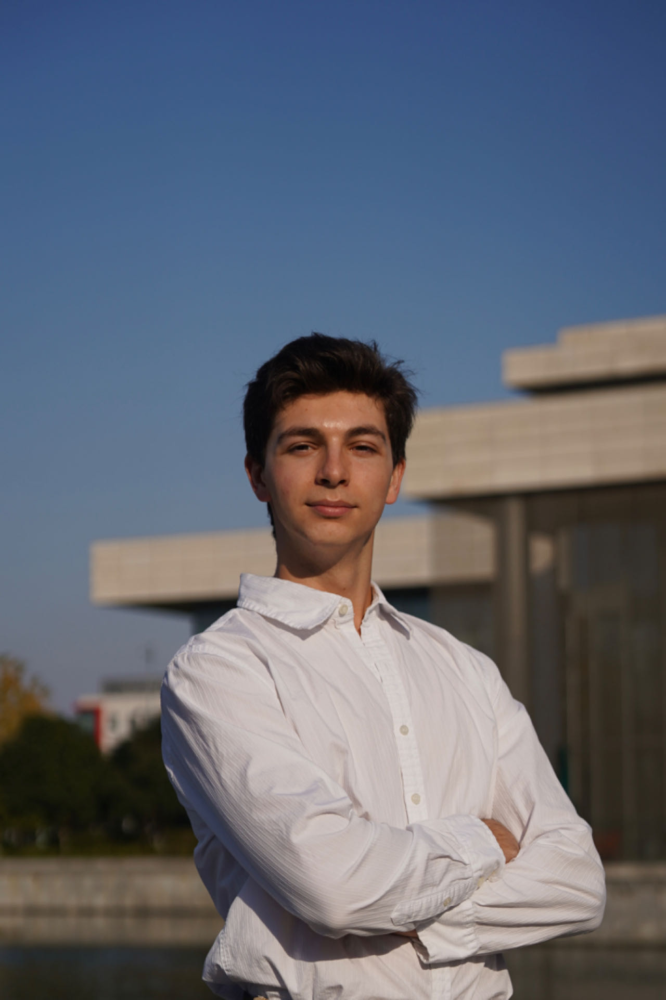
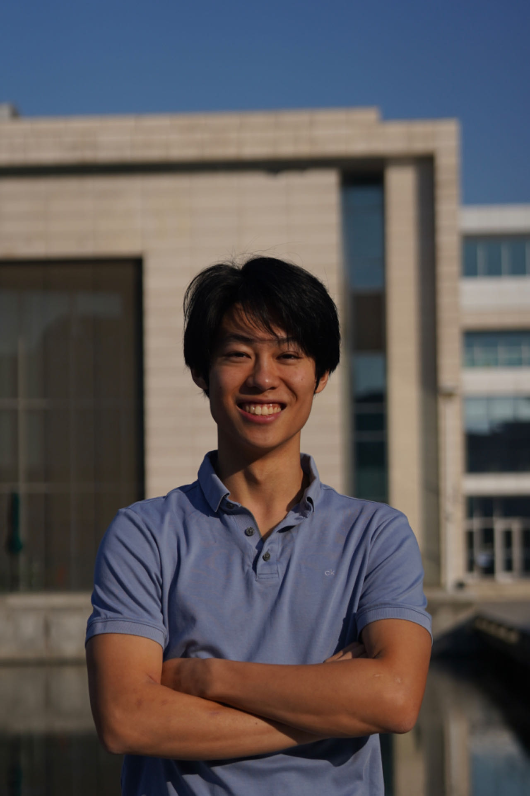
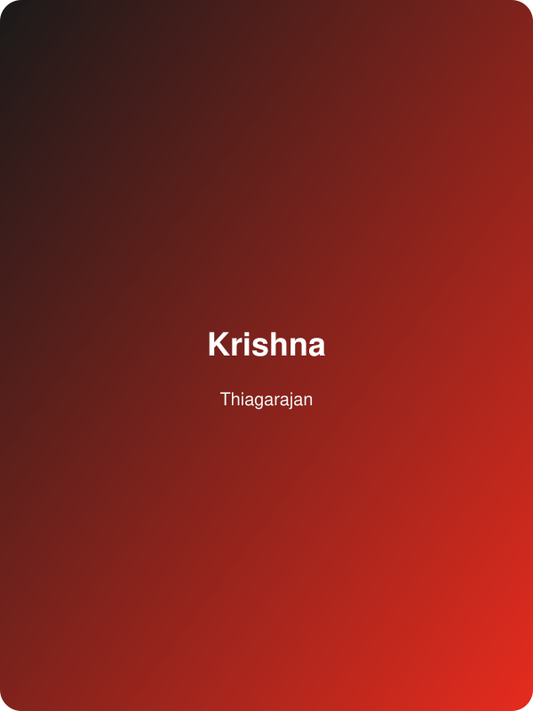
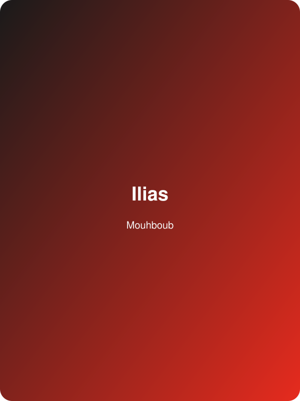
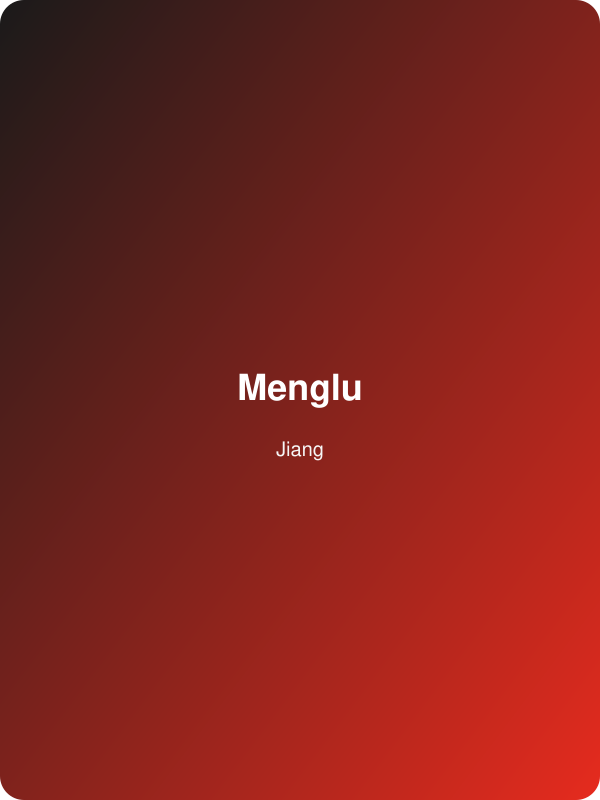
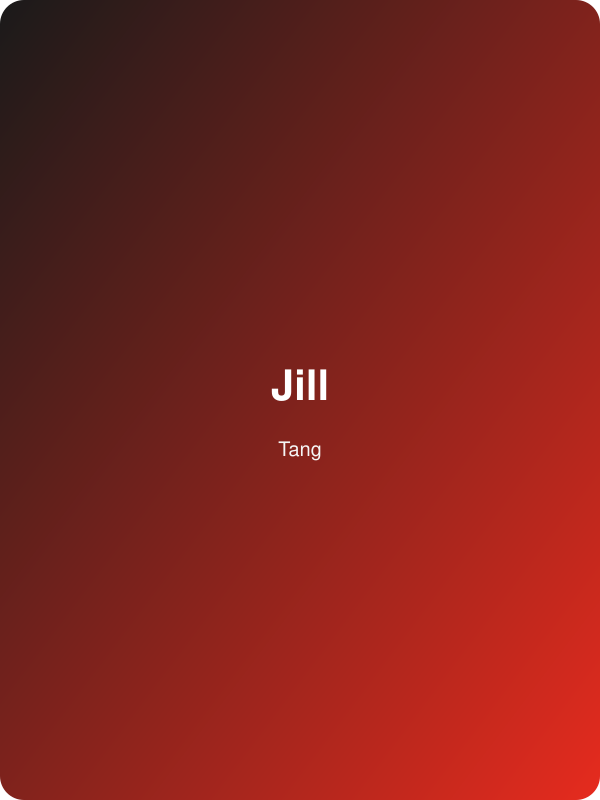
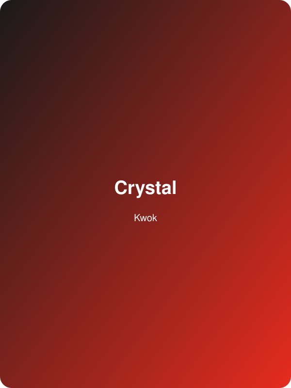

Noah Caplan
Lead Organizer
Archive · 2024
Small, daring ideas catching fire — exploring how one spark can ignite community, creativity, and change at Duke Kunshan University.
Our Theme Sparks—火花—revolves around the concept of seemingly small yet daring ideas that ignite significant change. It represents the moment of inspiration that triggers a spreading fire of innovation and creativity. “Sparks” is about the power of an idea to light up the world.
The 2024 event took place on November 23 in the DKU Theater (No. 8 Duke Avenue, Kunshan, Jiangsu), welcoming students, faculty, and global voices ready to let their sparks catch and spread.
Lead Organizer
Curator

Event Manager

Director of Design

Webmaster
Technical Director
Want to help shape the show? We are recruiting volunteers and organizers across operations, design, and speaker support.
Apply to join the team
Krishna Thiagarajan is a third year philosophy student at Duke Kunshan University. Having spent a good twenty years as a human person, Krishna is fascinated and interested by the human experience.

Hailing from the small Moroccan city of Errachidia, Ilias is passionatet about figuring out how the human brain functions. Fueled with creativity, Ilias is experienced in filmmaking, music production, and public speaking, and is constantly exploring new ways to blend his diverse talents.

Menglu Jiang is a second-year graduate student in the Global Health program. Her academic and research background is closely related to health promotion and health-related behavior. She is particularly passionate about nutrition and physiotherapy, with a focus on athletes and the elderly.
Cong Li is an innovative educator and researcher at Duke Kunshan University, specializing in language acquisition and educational technologies. With a passion for transforming the way students engage with learning, Cong has pioneered the use of gamification in language education. His work focuses on integrating game mechanics—such as points, challenges, and rewards—into language learning, boosting motivation and enhancing retention. Merging fun with function, Cong aims to make traditional methods more dynamic and engaging.

Jill Tang is a dynamic entrepreneur, community builder, and advocate for women in technology. She is the co-founder of She Rewires, a platform dedicated to empowering women to thrive in the tech industry. With a background in community-building and a passion for creating sustainable change, Jill has been recognized as one of the top influencers in her field. Her work has connected countless women to opportunities and encouraged them to leverage their individuality and strengths to become catalysts for change in their personal and professional lives.

Crystal Kwok is a filmmaker, actress, and host, known for her bold and unapologetic stance on challenging societal norms. Having started her career in front of the camera in Hong Kong cinema, Crystal’s experiences in both entertainment and journalism have fueled her passion for pushing against restrictive societal expectations, especially those related to gender and identity. She now uses her platform to amplify diverse voices and explore the complexities of identity and race, as showcased in her documentary work, including Blurring the Color Line.